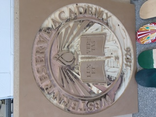
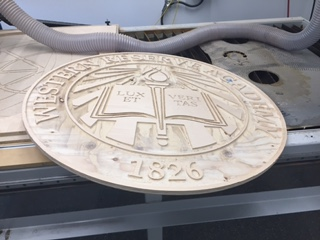

This week we are miilling out a seal of WRA on the CNC milling machine. we used the custom template in VCarve and used a quarter-inch ball nose and an engraving bit to finish the job.
The file is here.
Our first attempt is not as successful because our cutting depth was too deep for the pockets, so we made it shallower and here is the result.
